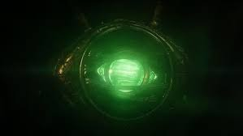

JOIA DO TEMPO

A Jóia do Tempo permite ao portador total domínio do tempo: passado, presente e futuro. E também com treinamento suficiente no uso da joia, o tempo pode ser usado como uma arma, aprisionando inimigos ou mundos inteiros em infinitos ciclos de tempo. Ela também permite o portador avançar ou regredir o espaço-tempo de um objeto ou um ser vivo.
A Jóia do Tempo, diferentemente das outras, foi enviada originalmente para a Terra. O Mago Agamotto criou um invólucro em forma de cordão para conseguir utilizar as habilidades da pedra. Protegido por várias gerações de Magos, o amuleto nos foi apresentado em posse da Anciã. Em suas aulas no Kamar-Taj, o Doutor Estranho passou a usá-lo sem permissão. Com a morte da Anciã e a ameaça de Dormammu, ele se tornou o novo guardião do Olho de Agamotto
Em seu grande "teste", Strange utilizou a Jóia para voltar no tempo e prender Dormammu num loop temporal infinito. Com a dominância sobre o vilão, o Doutor Estranho o convence a desistir da Terra e ir embora.
Já em Vingadores - Guerra Infinita, o Doutor Estranho após uma batalha contra Thanos em Titan, ele acaba por entregar a Jóia do Tempo de bandeja ão Titã, mesmo após ao longo do filme ter jurado várias vezes que não entregaria a Jóia, com isso, Thanos se torna o atual portador da Jóia do Tempo.